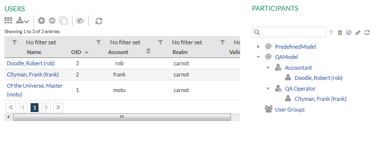
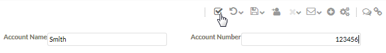

Checking Quality Assurance in the Portal
This chapter describes how quality assurance is performed in the Stardust
Portal.
To run the example process, start your server and deploy the model. For details on how
to deploy a model, please refer to chapter
Deploying a Workflow Model
of the Support Case Example.
Proceed with the following sections:
Creating the Users
First we create two users, a performer of the activity and a performer of
the quality assurance.
- Start the Stardust Portal as described in the chapter
Logging in the Stardust Portal of the
End User Handbook.
Login as administrator (motu/motu). You can use the Shift-F8 short key.
- Switch to the Participant Manager View of the
Administration Perspective.
- Create a user e.g. Robert Doodle and assign him to the
role Accountant.
- Create another user e.g. Frank Cityman and assign him
to the role QA Operator.
For details on how to create users and assign them to roles, refer chapter
Creating and Editing User Accounts of the
Stardust Portal documentation.

Figure: Create the users.
Starting Activity Instances
- Logout and login again as user Robert Doodle.
- In the Workflow Perspective, start the available process
QAUseFormula.
- Enter a valid account number and account name.
- Complete the activity.
Go back to the worklist view and start another process instance of
QAUseFormula. Now enter an invalid entry for the account
number, e.g. 123456, which has more than 4 digits and complete the
activity.

Figure: Enter an invalid account number.
Again start another process instance of
QAUseFormula. Now enter an empty entry for the account
name and complete the activity.

Figure: Enter an invalid account name.
Checking the Quality Assurance Operators Worklist
Logout and login as user Frank Cityman having the
quality assurance operator role. Switch to the
Workflow Execution Perspective.
In the My Assignments section, there are three items in the worklist.
Click on the 3 item(s) entry to open the worklist view.
Figure: Open the Worklist View.
In the worklist view, you see two activity instances marked with the
icon for being in quality
assurance, in our case awaiting to be reviewed. These are the activity instances, where an invalid name and an
invalid number was entered. The quality assurance formula added in the
activity property page has checked these values and returned true as
quality assurance is needed.
Figure: Activities marked for quality assurance.
Passing a Activity Instance
We activate the activity instance, where we entered an invalid account number.
Figure: Activate the first Quality Assurance Activity.
The activity execution view opens. No we correct the number and pass the
activity:
- Correct the number by using four digits, e.g. 1234.
- In the toolbar of the activity execution panel, click the
icon to pass quality
assurance.

- The Pass Quality Assurance dialog opens.
- Select Yes to confirm that corrections were made.
- Click Pick From List to choose a predefined error code.
- Select error ERR_101 for invalid account number.
- Add a note, e.g. about the correction, in the Add Note
section.
- Click OK.
Refer to chapter
Executing Quality Assurance Activities
in the
End User Handbook
for details on the option to pass or fail quality assurance activities.
In the worklist view, you can now see that the activity is passed and the
activity following, Next Activity, is in the worklist.
Figure: Worklist with the passed activity.
Failing a Quality Assurance Activity Instance
We activate the next activity instance awaiting quality assurance, where we
entered an empty account name.
Figure: Activate the first Quality Assurance Activity.
The activity execution view opens. No we will not correct the name and fail the
activity quality assurance. The activity should be delegated back to the
original performer.
- In the toolbar of the activity execution panel, click the
icon to fail quality
assurance.
- The Fail Quality Assurance dialog opens.
- Click Pick From List to choose a predefined error code.
- Select error ERR_102 for invalid account name.
- Add a note, e.g. about the reason for the failure, in the
Add Note section.
- Leave the Assign To Last Activity Performer option
selected.
- Click OK
In the worklist view, you can now see that the activity instance, which has
been failed for quality assurance is removed from the worklist of the
QA Operator role..
Figure: Updated Worklist after failing quality assurance.
Completing the Activity with correct Values
- Logout and login again as user Robert Doodle.
- In the My Assignments section of the
Workflow Perspective, you can see one item.
- Click on the entry to open the worklist view for this item.
- In the worklist, the activity instance is marked with the
icon for failed quality
assurance.
- Click on the Notes icon to open the
Notes view.
- The Notes Preview displays the note that was added
during quality assurance failure.
Now perform the activity again with correct entries.
- Activate the activity marked for failed quality assurance.
- In the toolbar of the activity execution pane, click on the error
code icon to view the error code for the failure:
- Enter valid entries and complete the activity.
Viewing the Workflow in the Process History
Now open the
Process Details view of the last process to have a look at the
actions performed on the activity instance, for which we entered an invalid account name.
- Open the Process Details view, e.g. by clicking the process in
the Control Center - Process Manager View.
- Switch to the
Process History Activity Table.
For details on the table and how quality assurance states are displayed there,
refer to chapter
Viewing the Tree of Activities in a specific Process of the
End User Handbook.
Figure: Process History
In this table, we can review the workflow cycle:
- Create Account was activated and completed by user
Robert Doodle.
- A new activity instance was created for Create Account
as quality assurance activity. This is
indicated with the overlay icon on the activity.
- This quality assurance activity instance was assigned to user
Frank Cityman as he has the role, which was selected as
quality assurance performer.
- Frank Cityman activated the activity instance.
- He added a note for the quality assurance failure reason.
- After the quality assurance activity instance was completed by failing
the quality assurance, a new
activity instance is created and reassigned to the last
performer, who is Robert Doodle.
- He activated and completed the activity with correct values.
- Again, an activity instance is created for quality assurance and
assigned to the quality assurance performer Frank Cityman.
- He passes the quality assurance for the activity and the subsequent
activity is activated (suspended).